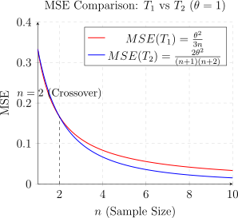

2.5 Properties of Estimators
Several properties of estimators are desirable, these are: unbiased, sufficiency, efficiency and consistency.
Sufficiency
The concept of sufficiency answers the question “Does a particular statistic or set of statistics contain all the information in the sample about the parameter or parameters?”
Definition 2.5.1. Consider a random sample \(X_1, X_2, \cdots , X_n\) from \(f_X(x;\theta )\), statistic \(T\) is said to be sufficient for \(\theta \) if and only if the conditional distribution of \(X_1,X_2, \cdots , X_n\) given \(T = t\) doesn’t depend on \(\theta \). \[f_{X_1, \cdots , X_n}(x_1, \cdots , x_n;\theta ) = \prod ^n_{i = 1} f_X(x_i;\theta )\] \[f_{X_1, \cdots , X_n/T=t}(x_1,\cdots , x_n;\theta ) = \frac {\prod ^n_{i = 1}f_X(x_i;\theta )}{f_T(t)} = g(x_1, \cdots , x_n).\]
Example 2.5.2. Let \(X_1, X_2, \cdots , X_n\) be a random sample from Bernoulli with \(P(X = 1) = \theta \) and \(P(X = 0) = (1 - \theta )\). Verify that \(T = \sum ^n_{i = 1}X_i\) is sufficient for \(\theta \).
Solution. \(f_X(x;\theta ) = \theta ^x(1 - \theta )^{1-x}\,, \quad x= 0, 1.\) Then the joint \begin {align*} f_{X1, \cdots , X_n} (x_1, \cdots , x_n; \theta ) & = \prod ^n_{i = 1} \theta ^{x_i}(1 - \theta )^{1 - x_i}\\ & = \theta ^{\sum ^n_{i = 1}x_i}\, (1 - \theta )^{n - \sum ^n_{i = 1} x_i}\\ & = \theta ^t\, (1 - \theta )^{n - t}. \end {align*}
The statistic \(T = \sum ^n_{i = 1}X_i\) is a sum of Bernoulli’s, thus \(T\) follows a binomial \[f_T(t) = \binom {n}{t}\theta ^t\, (1 - \theta )^{n - t}.\] Hence \begin {align*} f_{X_1, \cdots X_n/T = t}(x_1, \cdots x_n;\theta ) & = \frac {f_{X_1 , \cdot , X_n}(x_1, \cdots , x_n)}{f_T(t) }\\ & =\frac {\theta ^t\, (1 - \theta )^{n - t}}{\binom {n}{t}\theta ^t\, (1 - \theta )^{n - s}}\\ & = \frac {1}{\binom {n}{t}}. \end {align*}
Therefore, \(T\) is indeed sufficient statistic for \(\theta \). □
Theorem 2.5.3 (Factorization theorem: single sufficient). Let \(X_1, X_2, \cdots , X_n\) be a random sample from \(f_X(x;\theta )\), then \(T = T(X_1, X_2, \cdots , X_n)\) is sufficient statistic for \(\theta \) if and only if joint probability function (likelihood function) factors into \[f_{X_1, \cdots , X_n}(x_1, x_2, \cdots , x_n ; \theta ) = L(\theta ) = h(x_1, x_2, \cdots , x_n)\, g(t;\theta )\] where \(h(x_1,x_2, \cdots , x_n)\) does not depend on \(\theta \) and \(g\) depends on \(x_1, x_2, \cdots , x_n\) only through \(t\) then \(T\) is a sufficient statistic for \(\theta \).
Theorem 2.5.4 (Factorization theorem: joint sufficient). Let \(X_1, X_2, \cdots , X_n\) be a random sample from \(f_X(x;\theta )\). If \(T = (T_1, T_2, \cdots T_k)\) then \(T_1, T_2, \cdots , T_k\) are jointly sufficient for \(\theta \) if and only if the joint probability function (likelihood function of \(X_1, X_2, \cdots , X_n\) factors into \[L(\theta ) = h(x_1, x_2, \cdots , x_n)\, g(t_1, t_2, \cdots , t_k;\theta )\] where \(g(\cdot )\) doesn’t involve \(x_1, \cdots , x_n\) except through \(t_1, t_2, \cdots , t_k\), \(h(\cdot ) > 0\) and doesn’t involve \(\theta \).
- If \(T\) is a sufficient statistic then \(\widehat {\theta }\) will be a function of \(T\).
- Sufficient statistics are not unique.
- Generally, sufficient statistics are involved in the function of maximum likelihood, (MLE), (UMVUE).
Example 2.5.6. Let \(X_1, X_2, \cdots , X_n\) be a random sample from \[f(x;\theta ) = \theta \, x^{\theta - 1}\, , \quad 0 \leq x \leq 1, \quad \theta > 0.\] Find the sufficient statistic.
Solution. From the joint \[L(\theta ) = \prod ^n_{i = 1} f(x;\theta ) = \prod ^n_{i = 1} \theta \, x_i^{\theta - 1} = \underbrace {1}_{h(x)}\, \underbrace {\theta ^n \, \left (\prod ^n_{i = 1}x_i\right )^{\theta - 1}}_{g(t;\theta )}\] Therefore
- \(T = \prod ^n_{i = 1} X_i\) is a sufficient statistic.
- \(T_1 = \sum ^n_{i = 1} \log X_i\,\) is also a sufficient statistic.
Example 2.5.7. Suppose \(X_1, X_2, \cdots , X_n\) is a random sample from UNIF\(\left (\theta - \frac {1}{2}, \theta + \frac {1}{2}\right )\). Find the sufficient statistic for \(\theta \).
Solution. The PDF of a single observation \(X_i\) is: \[ f(x_i; \theta ) = 1, \quad \theta - \frac {1}{2} < x_i < \theta + \frac {1}{2} \] We can express this using indicator functions. For the entire sample to lie within these bounds, we require: \[ \theta - \frac {1}{2} < X_i < \theta + \frac {1}{2} \quad \text {for all } i = 1, \dots , n \] This condition is satisfied if and only if the minimum (\(Y_1\)) is greater than the lower bound and the maximum (\(Y_n\)) is less than the upper bound: \[ \theta - \frac {1}{2} < Y_1 \quad \text {and} \quad Y_n < \theta + \frac {1}{2} \] Now, we write the Likelihood function (the joint PDF): \begin {align*} L(\theta ) &= \prod _{i=1}^n f(x_i; \theta )\\ &= \prod _{i=1}^n I_{(\theta - 1/2, \theta + 1/2)}(x_i)\\ &= I_{(\theta - 1/2, \infty )}(y_1) \cdot I_{(-\infty , \theta + 1/2)}(y_n) \end {align*}
Here:
- \(g(t_1,t_2; \theta ) = I_{(\theta - 1/2, \infty )}(y_1) \cdot I_{(-\infty , \theta + 1/2)}(y_n)\)
- \(h(x_1, \dots , x_n) = 1 \geq 0\)
Since the likelihood factors into a function \(g\) that depends only on \((Y_1, Y_n)\) and \(\theta \), and a function \(h\) that is independent of \(\theta \), we conclude that: \(T = (Y_1, Y_n) = (T_1, T_2)\) is jointly sufficient for \(\theta .\) □
Example 2.5.8. Suppose \(X_1, X_2, \cdots , X_n\) is a random sample from the \(N(\mu , \sigma ^2)\) distribution. Show that \(T = \left (\sum ^n_{i = 1} X_i, \sum ^n_{i = 1} X_i^2\right )\) is a sufficient statistic for \(\theta = (\mu , \sigma ^2)\).
Find the score vector, the information matrix, the Fisher information matrix and the M.L. estimator of \(\theta = (\mu , \sigma ^2)'\).
Solution. \(f(x,\mu , \sigma ^2) = \frac {1}{\sqrt {2\pi \sigma ^2}}\, e^{-\frac {1}{2\sigma ^2}(x - \mu )^2}\) \begin {align*} L(\mu , \sigma ^2) & = \prod ^n_{i = 1}f(x_i,\mu , \sigma ^2)\\ & = \prod ^n_{i = 1}\frac {1}{\sqrt {2\pi \sigma ^2}}\, e^{-\frac {1}{2\sigma ^2}(x_i - \mu )^2}\\ & = \left (2\pi \sigma ^2\right )^{-\frac {n}{2}}\, e^{-\frac {1}{2\sigma ^2}\sum ^n_{i = 1} (x_i - \mu )^2}\\ & = \underbrace {1}_{h(x_1, \cdots , x_n)}\, \, \underbrace {\left (2\pi \sigma ^2\right )^{-\frac {n}{2}}\, e^{-\frac {1}{2\sigma ^2}\left (\sum ^n_{i = 1}x^2_i - 2\mu \sum ^n_{i = 1} x_i + n\mu ^2\right )}}_{g(T; \mu , \sigma ^2)}\\ \end {align*}
Therefore, \(T = \left (\sum ^n_{i = 1}X_i, \sum ^n_{i = 1} X_i^2\right )\,\) is a sufficient statistic for \(\theta = (\mu , \sigma ^2)'\).
Likelihood function \[L(\mu , \sigma ^2) = (2\pi \sigma ^2)^{-\frac {n}{2}}\, e^{-\frac {1}{2\sigma ^2}\sum ^n_{i = 1}(x_i -\mu )^2}\] Log likelihood function \begin {align*} l(\mu , \sigma ^2) & = -\frac {n}{2}\ln (2\pi \sigma ^2) - \frac {1}{2\sigma ^2}\sum ^n_{i = 1}(x_i - \mu )^2\\ & = -\frac {n}{2}\, (\ln 2\pi + \ln \sigma ^2) - \frac {1}{2\sigma ^2}\sum ^n_{i = 1}(x_i -\mu )^2. \end {align*}
Score \[\frac {\partial l}{\partial \mu } = -\frac {2}{2\sigma ^2}\sum ^n_{i = 1}(x_i - \mu )(-1) = \frac {1}{\sigma ^2}\sum ^n_{i = 1}(x_i - \mu )\] \[\frac {\partial l}{\partial \sigma ^2}= -\frac {n}{2\sigma ^2} + \frac {1}{2(\sigma ^2)^2}\sum ^n_{i = 1}(x_i - \mu )^2\]
\[S(\mu , \sigma ^2) = \begin {pmatrix} \frac {1}{\sigma ^2}\sum ^n_{i = 1}(x_i - \mu )\\\\ -\frac {n}{2\sigma ^2} + \frac {1}{2(\sigma ^2)^2}\sum ^n_{i = 1} (x_i -\mu )^2\\ \end {pmatrix}\] Information matrix \[I(\mu , \sigma ^2) = \begin {pmatrix} -\frac {\partial ^2l}{\partial \mu ^2} & -\frac {\partial ^2l}{\partial \mu \partial \sigma ^2}\\\\ & -\frac {\partial ^2l}{\partial {\sigma ^2}^2}\\ \end {pmatrix}\] \[-\frac {\partial ^2l}{\partial \mu ^2} = -\left [\frac {1}{\sigma ^2}\sum ^n_{i = 1}(-1)\right ] = \frac {n}{\sigma ^2}\] \[-\frac {\partial ^2l}{\partial \mu \partial \sigma ^2} = -\left [-\frac {1}{(\sigma ^2)^2}\sum ^n_{i = 1}(x_i -\mu )\right ] = \frac {1}{(\sigma ^2)^2}\sum ^n_{i = 1}(x_i - \mu )\] \[-\frac {\partial ^2 l}{\partial {\sigma ^2}^2}=-\left (\frac {n}{2(\sigma ^2)^2}-\frac {1}{(\sigma ^2)^3}\sum ^n_{i = 1}(x_i - \mu )^2\right ) = -\frac {n}{2(\sigma ^2)^2}+\frac {1}{(\sigma ^2)^3}\sum ^n_{i=1}(x_i - \mu )^2\]
\[I(\mu ,\sigma ^2) = \begin {pmatrix} \frac {n}{\sigma ^2} & \frac {1}{(\sigma ^2)^2}\sum ^n_{i = 1}(x_i - \mu )\\\\ \frac {1}{(\sigma ^2)^2}\sum ^n_{i= 1}(x_i - \mu ) & -\frac {n}{2(\sigma ^2)^2}+\frac {1}{(\sigma ^2)^3}\sum ^n_{i = 1}(x_i - \mu )^2\\ \end {pmatrix}\]
Fisher information \begin {align*} J(\mu ,\sigma ^2;X) & =E\left [I(\mu , \sigma ^2;X)\right ]\\ &= \begin {pmatrix} \frac {n}{\sigma ^2} & \frac {1}{(\sigma ^2)^2}\sum ^n_{i = 1}(E(X_i) - \mu )\\\\ \frac {1}{(\sigma ^2)^2}\sum ^n_{i= 1}(E(X_i) - \mu ) & -\frac {n}{2(\sigma ^2)^2}+\frac {1}{(\sigma ^2)^3}\sum ^n_{i = 1}E(X_i - \mu )^2\\ \end {pmatrix}\\ & = \begin {pmatrix} \frac {n}{\sigma ^2} & 0\\\\ 0 & -\frac {n}{2(\sigma ^2)^2}+ \frac {n\sigma ^2}{(\sigma ^2)^3}\\ \end {pmatrix}\\ & = \begin {pmatrix} \frac {n}{\sigma ^2} & 0\\ 0 & \frac {n}{2(\sigma ^2)^2}\\ \end {pmatrix}. \end {align*}
Solving \(S(\mu ,\sigma ^2) = 0\) \[\frac {1}{\sigma ^2}\sum ^n_{i =1}(x_i - \mu ) = 0\] \[\sum ^n_{i =1}x_i - n\mu = 0\] \[\widehat {\mu } = \frac {1}{n}\sum ^n_{i = 1} x_i = \overline {x}.\] and \[-\frac {n}{2\sigma ^2} + \frac {1}{2(\sigma ^2)^2}\sum ^n_{i = 1}(x_i - \mu )^2 = 0\] \[\frac {n}{2\sigma ^2} = \frac {1}{2(\sigma ^2)^2}\, \sum ^n_{i = 1}(x_i - \mu )^2\] \[\widehat {\sigma }^2 = \frac {1}{n}\sum ^n_{i = 1} (x_i - \overline {x})^2.\] Therefore, \[\widehat {\theta } = \left (\overline {X}\, ,\, \frac {1}{n}\sum ^n_{i = 1}(X_i - \overline {X})^2\right )'\] is the M.L. estimator of \(\theta = (\mu , \sigma ^2)'\). □
Unbiasedness
Definition 2.5.9. An estimator \(T\) is said to be an unbiased estimator of \(\tau (\theta )\) if \(E(T) = \tau (\theta )\) for all \(\theta \in \Omega \).
Example 2.5.10. Let \(X_1, X_2, \cdots , X_n\) be a random sample from \(N(\mu , \sigma ^2)\), then
- \(\overline {X}\) is an unbiased estimator for \(\mu \) and
- \(S^2\) is an unbiased estimator for \(\sigma ^2\).
Proof. \begin {align*} E(\overline {X}) & = E\left [\frac {1}{n}\sum ^n_{i = 1} X_i\right ] = \frac {1}{n}\sum ^n_{i = 1}E(X_i) = \frac {1}{n}\sum ^n_{i = 1} \mu = \frac {1}{n}\, n\mu = \mu . \end {align*}
i.e \(E(\overline {X}) = \mu \). Therefore \(\overline {X}\) is an unbiased estimator for \(\mu \).
\begin {align*} E(S^2) & = E\left [\frac {1}{n-1}\sum ^n_{i = 1}(X_i - \overline {X})^2\right ]\\ & = E\left [\frac {1}{n-1}\sum ^n_{i = 1}\left \{(X_i - \mu ) - (\overline {X}-\mu )\right \}^2\right ]\\ & = E\left [\frac {1}{n-1}\sum ^n_{i = 1}\left \{(X_i - \mu )^2 + (\overline {X} - \mu )^2 - 2(\overline {X}-\mu )(X_i - \mu )\right \}\right ]\\ & = E\left [\frac {1}{n-1}\left [\sum ^n_{i = 1}(X_i - \mu )^2 - n(\overline {X} - \mu )^2\right ]\right ]\\ & = \frac {1}{n-1}\left [\sum ^n_{i=1}E(X_i-\mu )^2 - nE(\overline {X} - \mu )^2\right ]\\ & = \frac {1}{n-1}\left [\sum ^n_{i = 1}\operatorname {Var}(X_i) - n\operatorname {Var}(\overline {X})\right ]\\ & = \frac {1}{n-1}\left [\sum ^n_{i = 1} \sigma ^2 - n\frac {\sigma ^2}{n}\right ]\\ & = \frac {1}{n - 1}\left [n\sigma ^2 - \sigma ^2\right ]\\ & = \frac {(n-1)\sigma ^2}{n-1}\\ & = \sigma ^2. \end {align*}
Therefore, \(S^2\) is an unbiased estimator for \(\sigma ^2\). □
Definition 2.5.11. If \(T\) is an estimator of \(\tau (\theta )\), then the bias of \(T\) given by \[\operatorname {bias}(T) = E(T) - \tau (\theta )\] and the mean squared error of \(T\) is given by \[\operatorname {MSE}(T) = E\left [T- \tau (\theta )\right ]^2.\]
Theorem 2.5.12. If \(T\) is an estimator of \(\tau (\theta )\), then \[\operatorname {MSE}(T) = \operatorname {Var}(T) + \left [\operatorname {bias}(T)\right ]^2.\]
Proof. \begin {align*} \operatorname {MSE}(T) & = E[T - \tau (\theta )]^2\\ & =E \left [T - E(T) + E(T) - \tau (\theta )\right ]^2\\ & = E\left [(T - E(T))^2 + (E(T) - \tau (\theta ))^2 + 2(T - E(T))(E(T)-\tau (\theta ))\right ]\\ & = E\left [T-E(T)\right ]^2 + \left [E(T) - \tau (\theta )\right ]^2 + 2\left [E(T) - \tau (\theta )\right ]\underbrace {\left [E(T) - E(T)\right ]}_0\\ & = \operatorname {Var}(T) + \left [\operatorname {bias}(T)\right ]^2. \end {align*} □
Example 2.5.13. Let \(X_1, X_2, \cdots , X_n\) be a random sample from a UNIF\((0,\theta )\) distribution. Let \(T_1 = 2\overline {X}\) and \(T_2 = X_{(n)}\) be estimators of \(\theta \).
-
Is \(T_1\) an unbiased estimator for \(\theta \)?
Solution. \(f(x;\theta ) = \begin {cases} \frac {1}{\theta }, & 0 < x < \theta \\ 0, & \text {otherwise} \end {cases}\)
\begin {align*} E(T_1) = E(2\overline {X}) = 2E(\overline {X})& = 2E\left [\frac {1}{n}\sum ^n_{i = 1}X_i\right ]\\ & = \frac {2}{n}\sum ^n_{i = 1}E(X_i)\\ & = \frac {2}{n}\sum ^n_{i = 1}E(X)\\ & = 2E(X). \end {align*}
Now \[E(X) = \int ^{\theta }_0 x\, \frac {1}{\theta }\, dx = \frac {x^2}{2\theta }\Bigg |^{\theta }_0 = \frac {\theta ^2}{2\theta } = \frac {\theta }{2}.\] Therefore, \[E(T_1) = 2\left (\frac {\theta }{2}\right ) = \theta .\] Therefore, \(T_1\) is an unbiased estimator of \(\theta \). □
-
Is \(T_2\) an unbiased estimator for \(\theta \)?
Solution. \(E(T_2) = E(X_{(n)}\) \[f_{X_n}(y) = n\left [F_X(y)]\right ]^{n - 1}\, f_X(y)\] \[F_X(x) = \int ^x_0\frac {1}{\theta }\, dt = \frac {t}{\theta }\Bigg |^x_0 = \frac {x}{\theta }.\] \[f_{X_n}(y) = n\left (\frac {y}{\theta }\right )^{n - 1}\frac {1}{\theta } = \frac {ny^{n-1}}{\theta ^n}\, , \quad 0 < y < \theta \] \begin {align*} E(T_2) & = \int ^{\theta }_0 y \, \frac {n y^{n-1}}{\theta ^n}\, dy\\ & = \frac {n}{\theta ^n}\int _0^{\theta }y^n\, dy\\ & = \frac {n}{\theta ^n}\left [\frac {y^{n + 1}}{n+1}\right ]^{\theta }_0\\ & = \frac {n\theta }{n+1}. \end {align*}
i.e \[E(T_2) = \frac {n\theta }{n + 1}.\] Therefore, \(T_2\) is a biased estimator of \(\theta \). □
-
Find the MSEs of \(T_1\) and \(T_2\).
Solution. \(\operatorname {MSE}(T_2) = \operatorname {Var}(T_2) + \left [\operatorname {bias}(T_2)\right ]^2.\) \[\operatorname {bias}(T_2) = E(T_2) - \theta = \frac {n\theta }{n + 1} - \theta = -\frac {\theta }{n + 1}.\] \begin {align*} \operatorname {Var}(T_2) & = E(T^2_2) - [E(T_2)]^2\\ & = \frac {n\theta ^2}{n + 2}-\frac {n^2\theta ^2}{(n+1)^2}\\ & = \left [\frac {1}{n + 2}- \frac {n}{(n + 1)^2}\right ]n\theta ^2\\ & = \left [\frac {n^2 + 2n + 1 - n^2 - 2n}{(n + 1)^2(n + 2)}\right ]n\theta ^2\\ & = \frac {n\theta ^2}{(n + 1)^2(n + 2)}. \end {align*}
Therefore \begin {align*} \operatorname {MSE}(T_2) & = \frac {n\theta ^2}{(n + 1)^2(n + 2)}+ \frac {\theta ^2}{(n + 1)^2}\\ & = \frac {\theta ^2}{(n + 1)^2}\left [\frac {n}{n + 2}+ 1\right ]\\ & = \frac {2\theta ^2}{(n + 1) (n+2)}. \end {align*}
\begin {align*} \operatorname {MSE}(T_1) & = \operatorname {Var}(T_1) + \left [\operatorname {bias}(T_1)\right ]^2\\ & = \operatorname {Var}(T_1)\\ & = \operatorname {Var}(2\overline {X})\\ & = 4\, \frac {\operatorname {Var}(X)}{n}\\ & = \frac {4}{n}\left [E(X^2) - (E(X))^2\right ]. \end {align*}
\[E(X^2) = \int ^{\theta }_0x^2\, \frac {1}{\theta }\, dx = \frac {x^3}{3\theta }\Bigg |^{\theta }_0 = \frac {\theta ^3}{3\theta }=\frac {\theta ^2}{3}.\] Therefore \[\operatorname {MSE}(T_1) = \frac {4}{n}\left [\frac {\theta ^2}{3}-\frac {\theta ^2}{2^2}\right ] = \frac {4\theta ^2}{12n} = \frac {\theta ^2}{3n}.\] □

Definition 2.5.14. The relative efficiency of an unbiased estimator \(T\) of \(\tau (\theta )\) to another unbiased estimator \(T^*\) of \(\tau (\theta )\) is given by \[\operatorname {re}(T,T^{*}) = \frac {\operatorname {Var}(T^*)}{\operatorname {Var}(T)}.\] An unbiased estimator \(T^*\) of \(\tau (\theta )\) is said to be efficient if re\((T,T^*) \leq 1\) for all unbiased estimators \(T\) of \(\tau (\theta )\) and all \(\theta \in \Omega \).
The efficiency of an unbiased estimator \(T\) of \(\tau (\theta )\) is given by \[e(T) = \operatorname {re}(T,T^*) = \frac {\operatorname {Var}(T^*)}{\operatorname {Var}(T)}\] if \(T^*\) is an efficient estimator of \(\tau (\theta )\).
Definition 2.5.15. Let \(X_1, X_2, \cdots , X_n\) be a random sample of size \(n\) from \(f(x;\theta )\). An estimator \(T^*\) of \(\tau (\theta )\) is called a uniformly minimum variance unbiased estimator (UMVUE) of \(\tau (\theta )\) if:
- \(T^*\) is unbiased for \(\tau (\theta )\), and
- \(\operatorname {Var}(T^*) \leq \operatorname {Var}(T)\), for any other unbiased estimator \(T\) of \(\tau (\theta )\), for all \(\theta \in \Omega \).
Theorem 2.5.16 (Cramer-Rao Inequality). Let \(X_1, X_2, \cdots , X_n\) be a random sample from \(f(x;\theta ), \, \theta \in \Omega \). Let \(T\) be any unbiased estimator for \(\tau (\theta )\). Then, under regularity conditions, \[\operatorname {Var}(T)\geq \frac {\left [\tau '(\theta )\right ]^2}{J(\theta )}\] where \(J(\theta )\) is the Fisher information function.
- The number \(\frac {\left [\tau '(\theta )\right ]^2}{J(\theta )}\) is called the Cramer-Rao lower bound (CRLB).
- If an estimator can be found that attains the CRLB then that estimator is a UMVUE for \(\tau (\theta )\).
- If equality holds then \(T\) is called an efficient estimator of \(\tau (\theta )\).
- The ratio of the CRLB to the variance of an unbiased estimator is called the efficiency of the estimator. i.e \[e(T) = \frac {\operatorname {CRLB}}{\operatorname {Var}(T)}.\]
Example 2.5.18. Let \(X_1, X_2, \cdots , X_n\) be a random sample from \[f(x;\theta ) = \frac {1}{\theta }e^{-\frac {x}{\theta }}\, , \quad x > 0.\] Let \(T_1 = \overline {X}\) and \(T_2 = nX_{(1)}\) be estimator of \(\theta \).
-
Show that \(T_1\) and \(T_2\) are unbiased estimators of \(\theta \).
Solution. \begin {align*} E(T_1) = E(\overline {X}) & = E(X)\\ & = \int ^{\infty }_0 \frac {x}{\theta }e^{-\frac {x}{\theta }}\, dx\\ & = \theta \int ^{\infty }_0 m e^{-m}\, dm\, , \quad \quad \quad \text {letting}\quad m = \frac {x}{\theta }\\ & =\theta . \end {align*}
Therefore, \(T_1\) is an unbiased estimator of \(\theta \). \[E(T_2) = E[nX_{(1)}] = nE[X_{(1)}]\] \[f_{X_{(1)}}(y) = n(1-F_X(y))^{n-1}\, f_X(y)\] \[F_X(x) = \int _0^x f(t) \, dt = \int ^x_0 \frac {1}{\theta }e^{-\frac {t}{\theta }}\, dt = -e^{-\frac {t}{\theta }}\Big |^x_0 = 1 - e^{-\frac {x}{\theta }}.\] \[f_{X_{(1)}}(y) = n\left [1 - 1 + e^{-\frac {y}{\theta }}\right ]^{n-1}\, \frac {1}{\theta }e^{-\frac {y}{\theta }} = \frac {n}{\theta }e^{-\frac {ny}{\theta }}\, , \quad y >0\] Then \begin {align*} E[X_{(1)}] & = \int ^{\infty }_0y\, \frac {n}{\theta }e^{-\frac {ny}{\theta }}\, dy\\ & = \int ^{\infty }_0 \frac {ny}{\theta }e^{-\frac {ny}{\theta }}\, dy\\ & = \frac {\theta }{n}\, \int ^{\infty }_0me^{-m}\, dm\, , \quad \quad \quad \text {letting}\quad m = \frac {ny}{\theta }\\ & = \frac {\theta }{n}. \end {align*}
Therefore \[E(T_2) = n\, \frac {\theta }{n} = \theta .\] □
-
Find the CRLB for the variances of unbiased estimators of \(\theta \).
Solution. CRLB \(= \frac {\left [\tau '(\theta )\right ]^2}{J(\theta )}\), \(\tau (\theta ) = \theta \) implies that \(\tau '(\theta ) = 1.\) \[f(x;\theta ) = \frac {1}{\theta }e^{-\frac {x}{\theta }}\] \[\ln f(x;\theta ) = -\frac {x}{\theta }-\ln \theta \] \[\frac {\partial }{\partial \theta }\ln f(x;\theta ) = \frac {x}{\theta ^2}- \frac {1}{\theta }\] \[\frac {\partial ^2}{\partial \theta ^2}\ln f(x;\theta ) = -\frac {2x}{\theta ^3}+ \frac {1}{\theta ^2}\] So that \begin {align*} J(\theta ) & = nE\left [-\frac {\partial ^2}{\partial \theta ^2}\ln f(x;\theta )\right ]\\ & = n\, E\left [\frac {2X}{\theta ^2}-\frac {1}{\theta ^2}\right ]\\ & = n\, \left [\frac {2\, E(X)}{\theta ^3}-\frac {1}{\theta ^2}\right ]\\ & = n\, \left [\frac {2\theta }{\theta ^3}- \frac {1}{\theta ^2}\right ]\\ & = \frac {n}{\theta ^2}. \end {align*}
Therefore, \[\operatorname {CRLB} = \frac {1}{J(\theta )} = \frac {1}{n/\theta ^2} = \frac {\theta ^2}{n}.\] □
-
Is \(T_1\) a U.M.V.U.E of \(\theta \)?
Solution. \(\operatorname {Var}(T_1) = \operatorname {Var}(\overline {X}) = \frac {1}{n}\operatorname {Var}(X).\) \[\operatorname {Var}(X) = E(X^2) - [E(X)]^2\] \begin {align*} E(X^2) & = \int _0^{\infty } x^2 \, \frac {1}{\theta }e^{-\frac {x}{\theta }}\, dx\\ & =\frac {1}{\theta }\int ^{\infty }_0(\theta m)^2 e^{-m} \, \theta \, dm\, ,\quad \quad \quad \text {letting} \quad m = \frac {x}{\theta }\\ & = \frac {1}{\theta }\, \theta ^2\, \theta \underbrace {\int ^{\infty }_0 m^2 e^{-m}\, dm}_{2!}\\ & = 2\theta ^2. \end {align*}
Hence \[\operatorname {Var}(X) = 2\theta ^2 - \theta ^2 = \theta ^2.\] Therefore \[\operatorname {Var}(T_1) = \frac {\theta ^2}{n}.\] i.e. \(T_1\) attains the CRLB
Therefore, \(T_1 = \overline {X}\) is the U.M.V.U.E for \(\theta \). □
-
Is \(T_2\) a U.M.V.U.E of \(\theta \)?
Solution. \(\operatorname {Var}(T_2) = \operatorname {Var}(nX_{(1)}) = n^2\, \operatorname {Var}(X_{(1)})\) \begin {align*} E\left [X_{(1)}\right ]^2 & = \int ^{\infty }_0 y^2\, \frac {n}{\theta }\, e^{-\frac {ny}{\theta }}\, dy\\ & = \frac {\theta }{n}\int ^{\infty }_0 \left (\frac {ny}{\theta }\right )^2\, e^{-\frac {ny}{\theta }}\, dy\\ & = \frac {\theta }{n}\,\frac {\theta }{n} \underbrace {\int ^{\infty }_0m^2e^{-m}\, dm}_{2!}\, ,\quad \quad \quad \text {letting}\quad m = \frac {ny}{\theta }\\ & = \frac {2\theta ^2}{n^2}. \end {align*}
Hence \[\operatorname {Var}(X_{(1)} = \frac {2\theta ^2}{n^2}- \frac {\theta ^2}{n^2} = \frac {\theta ^2}{n^2}.\] Therefore \[\operatorname {Var}(T_2) = \frac {n^2 \theta ^2}{n^2} = \theta ^2.\] i.e \(T_2\) does not attain the CRLB. Therefore, \(T_2 = n\, X_{(1)}\) is not a U.M.V.U.E for \(\theta \). □
-
Find the efficiency of \(T_1\).
Solution. \[e(T_1) = \frac {\operatorname {CRLB}}{\operatorname {Var}(T_1)} = \frac {\theta ^2/n}{\theta ^2/n} = 1.\] That is, \(T_1\) is an efficient estimator of \(\theta \). □
-
Find the efficiency of \(T_2\).
Solution. \[e(T_2) = \frac {\operatorname {CRLB}}{\operatorname {Var}(T_2)} = \frac {\theta ^2/n}{\theta ^2} = \frac {1}{n}.\] □
-
Find the CRLB for the variances of unbiased estimators of \(\frac {1}{\theta }\).
Solution. \(\operatorname {CRLB} = \frac {\left [\tau '(\theta )\right ]^2}{J(\theta )}\) \[\tau (\theta ) = \frac {1}{\theta }\] \[\tau '(\theta ) = -\frac {1}{\theta ^2}\] \[\operatorname {CRLB} = \frac {(-1/\theta ^2)^2}{n/\theta ^2} = \frac {1}{\theta ^2}\, \cdot \, \frac {\theta ^2}{n} = \frac {1}{n\theta ^2}\] □
Definition 2.5.19. A sequence \(\{T_n\}\) of estimators of \(\tau (\theta )\) is said to be asymptotically unbiased if \[\lim _{n\rightarrow \infty } E(T_n) = \tau (\theta ) \quad \text {for all}\quad \theta \in \Omega .\] (i.e \(\lim _{n\rightarrow \infty }\operatorname {bias}(T) = 0)\)
Theorem 2.5.20. A random variable \(X_n\) converges in probability to \(c\), written \(X_n\overset {P}{\longrightarrow }c\), if and only if for every \(\varepsilon > 0\), \[\lim _{n\rightarrow \infty }P\left (|X_n - c|<\varepsilon \right ) = 1\quad \text {or}\quad \lim _{n\rightarrow \infty }P\left (|X_n - c|> \varepsilon \right ) = 0.\]
Theorem 2.5.21 (weak law of large numbers). Let \(X_1, X_2, \cdots , X_n\) be i.i.d random variables with mean \(E(X_i) = \mu \) and finite variance \(\operatorname {Var}(X_i) = \sigma ^2\). Then \(\, \overline {X}_n\overset {P}{\longrightarrow } \mu \).
Theorem 2.5.22 (Limit Theorems).
- If \(X_n\overset {P}{\longrightarrow } a\) and \(g\) is continuous at \(x = a\), then \(g(X_n) \overset {P}{\longrightarrow } g(a).\)
- If \(X_n\overset {P}{\longrightarrow } a, \quad Y_n\overset {P}{\longrightarrow } b \) and \(g(x,y)\) is continuous at \((a,b)\) then \(g(X_nY_n)\overset {P}{\longrightarrow } g(a,b)\).
Theorem 2.5.23. Let \(\{T_n\}\) be a sequence of estimators of \(\tau (\theta )\). These estimators are said to be consistent estimators of \(\tau (\theta )\) if for every \(\varepsilon > 0\), \[\lim _{n\rightarrow \infty }P\left (|T_n - \tau (\theta )| < \varepsilon \right ) = 1\] for every \(\theta \in \Omega \). [i.e. \(T_n \overset {P}{\longrightarrow }\tau (\theta )\)]
Theorem 2.5.24. A sequence \(\{T_n\}\) of estimators of \(\tau (\theta )\) is consistent if and only if it is asymptotically unbiased and \[\lim _{n\rightarrow \infty }\operatorname {Var}(T_n) = 0.\]
Example 2.5.25. Let \(X_1, X_2, \cdots , X_n\) be a random sample from a \(N(\mu ,\sigma ^2)\) distribution. Let \(T = \frac {1}{n}\sum ^n_{i=1}(X_i-\overline {X})^2\) be an estimator for \(\sigma ^2\). Show that
-
\(T\) is an asymptotically unbiased estimator for \(\sigma ^2\).
Solution. \begin {align*} E(T) & = E\left ([\frac {1}{n}\sum ^n_{i = 1}(X_i - \overline {X})^2\right ]\\ & = E\left [\frac {n - 1}{n}\, \frac {1}{n- 1}\sum ^n_{i = 1} (X_i - \overline {X})^2\right ]\\ & = \frac {n - 1}{n}E(S^2)\\ & = \frac {n-1}{n}\sigma ^2. \end {align*}
\[\operatorname {bias}(T) = E(T) - \sigma ^2 = \frac {n-1}{n}\sigma ^2 - \sigma ^2 = -\frac {1}{n}\sigma ^2 \longrightarrow 0.\] That is \[\lim _{n\rightarrow \infty } \operatorname {bias}(T) = \lim _{n\rightarrow \infty }\left (-\frac {1}{n}\sigma ^2\right ) = 0.\] i.e \[\lim _{n\rightarrow \infty }E(T) = \lim _{n\rightarrow \infty }\left (\frac {n-1}{n}\sigma ^2\right ) = \sigma ^2 \lim _{n \rightarrow \infty }\left (1 - \frac {1}{n}\right ) = \sigma ^2.\] Therefore, \(T\) is an asymptotically unbiased estimator for \(\sigma ^2\). □
-
\(T\) is a consistent estimator for \(\sigma ^2\).
Solution. \[\operatorname {Var}(T) = \operatorname {Var}\left (\frac {n-1}{n}\, S^2\right ) = \left (\frac {n - 1}{n}\right )^2\, \operatorname {Var}(S^2).\] Recall \(\, (n-1)\frac {S^2}{\sigma ^2} \thicksim \chi ^2(n-1)\) \[\implies \,\, \operatorname {Var}\left [(n-1)\frac {S^2}{\sigma ^2}\right ] = 2(n-1)\] \[\frac {(n-1)^2}{\sigma ^4}\, \operatorname {Var}(S^2) = 2(n-1)\] \[\operatorname {Var}(S^2) = \frac {2(n-1)\sigma ^4}{(n-1)^2} = \frac {2\sigma ^4}{n-1}.\] Therefore \[\operatorname {Var}(T) = \frac {(n-1)^2}{n^2}\, \frac {2\sigma ^4}{n-1}=\frac {2(n-1)\sigma ^4}{n^2}\] \[\lim _{n\rightarrow \infty }\operatorname {Var}(T) = \lim _{n\rightarrow \infty }\frac {2(n-1)\sigma ^4}{n^2} = 2\sigma ^4\lim _{n\rightarrow \infty }\left (\frac {1}{n}-\frac {1}{n^2}\right ) = 0.\] i.e \(T\) is asymptotically unbiased and \(\lim _{n\rightarrow \infty }\operatorname {Var}(T) = 0\).
Therefore, \(T\) is a consistent estimator for \(\sigma ^2\). □
Questions on this section
Stuck on something here? Ask below and it stays attached to this topic.